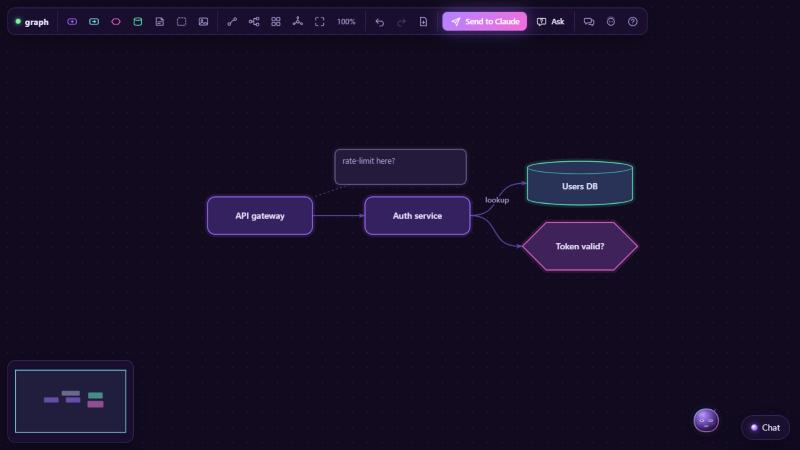

The graph board
Talk to Claude in diagrams. graph is the first unique and the one that shows what the engine does: a dark-violet node/edge board where you draw the thing you mean while you chat, and the companion (Doto) reads, points, suggests and edits the same board. It comes with lets, as a browser window or, since 0.4.0, as a pane inside Claude Code.

Install
graph comes with the engine. It is the first entry in the engine's defaults.json, so node install.mjs clones it into ~/.lets/uniques/graph when you install lets, and the engine clones it again whenever it is missing: in the background when it starts, or on demand the first time you open it. After the restart there is nothing to install, only something to type:
/lets graph # or /lets:lets graph without the alias
/lets graph plan the auth flow # with an opening intent
/lets graph native # as a pane inside Claude Code (see below)What it needs
- lets 0.7.0 or later for graph 0.4.0: the manifest says
"engine": ">=0.7.0", because of the native view. An older engine lists graph with a problem in/lets list;claude plugin update lets@letsupdates the engine, then restart Claude Code. - Permissions:
"fs.write": ["uploads"](a pasted screenshot lands under~/.lets/uploads/graph/) and"net": []. Capabilities:entity,chat,components,media.image,clipboard. - For the pane only: the optional
lets-nativemod and Claude Code 2.1.287+ (below). The browser window needs neither.
Check, reinstall, update, remove
/lets list # graph, modes web and native, no problems
node engine/bin/lets.mjs doctor # from the lets checkout: … "uniques": ["graph:ok", "den:ok"]
node engine/bin/lets.mjs defaults --force --only graph # reinstall from main: also how you update itOther ways in, all ending in the same folder: /lets store graph installs it through the store like any other unique (Claude shows the inspection, you say yes), and a plain git clone https://github.com/offensiveadhd/lets-unique-graph.git ~/.lets/uniques/graph works too (update that copy with git pull). While developing, point LETS_UNIQUES_DIRS at the parent of your checkout instead of copying. To remove graph, delete ~/.lets/uniques/graph; being a default, it comes back the next time the engine starts unless LETS_NO_DEFAULTS=1 is set. Your saved boards are not in that folder (they live in ~/.lets/sessions/graph/) and survive a reinstall. Every path and option is in Installing uniques.
A pane inside Claude Code new in 0.4.0
graph 0.4.0 is the first unique with a native view. With lets 0.7.0 the same board can open as a pane in Claude Code's own sidebar instead of a browser window: the board as a picture, your nodes as a list of buttons, an editor for what you select (rename, kind, details, connect, note, remove), an add box and an ask box. Doto is a line at the top (his words, his mood, his suggestions as buttons) and the chat a block under the view. Claude and Doto work the same way in both modes, with the same events and commands, and Send to Claude and resume carry the board across.
node install.mjs --native # once, from the lets checkout: installs the lets-native mod …
/plugin install lets-native@lets # … or the same from inside Claude Code (2.1.287+). Restart afterwards.
/lets graph native plan the auth flow
/lets graph web # the browser window, explicitly
/lets graph native resume # bring back a board you sentThe word after the name picks the mode; a bare /lets graph opens the browser window. Put "mode": "native" in ~/.lets/config.json to make the pane the default for uniques that have one. If Claude says no lets-native mod was seen, the mod is not installed or Claude Code has not been restarted since; the web window works meanwhile. A native window does not outlive the Claude Code session (saved sessions do), and the pane polls the host, so Claude's commands land within about a second. The contract is the engine's docs/NATIVE.md.
What you can do
- Double-click to add a node; drag from a node's glowing dot (or select one and Shift+click another) to connect; double-click a label to rename; marquee-select; undo, redo, delete.
- Toolbar: add per kind, connect mode, tree / grid / radial auto-layout, fit, new, Send to Claude, Ask, chat, companion,
?shortcuts. - Paste or drop a screenshot: it becomes an image node and Claude gets the file path. If it shows a sketch or a whiteboard, Claude offers to turn it into connected nodes.
- Ask a one-line question about the selection (or the whole board) with Ask; Claude answers in chat and highlights the nodes it talks about.
- Everything persists locally per window and survives reloads.
Node kinds
Keys 1–5 change the kind of the selection.
| Kind | Looks like | Use it for |
|---|---|---|
idea | violet | A thought, a feature |
step | cyan | Something that happens |
decision | magenta, diamond-ish | A question with branches |
data | teal | A store, a document |
note | dim sticky | A comment; its body is the text |
image | the picture, with a caption | A pasted or dropped screenshot |
group | dashed frame | Nodes inside it belong to it |
Mouse & keyboard
| Do | How |
|---|---|
| Add a node | Double-click empty space, or the toolbar |
| Connect | Drag from a node's dot, or select A then Shift+click B |
| Rename | Double-click the label |
| Select | Click, Shift+click, or drag a marquee on empty space |
| Pan | Space+drag, middle-drag, or two fingers (right-click belongs to Doto) |
| Zoom | Wheel, 0.25× to 3×, centred on the cursor |
| Undo / redo | Ctrl+Z / Ctrl+Y (50 steps) |
| Duplicate / select all | Ctrl+D / Ctrl+A |
| Delete | Delete |
| Change kind | 1–5 |
Doto on the board
Right-click summons or dismisses Doto. Click him for questions about what you selected or hovered: Explain this, What's missing around …?, Suggest what comes next, Break it into steps, Critique it, Better name?. On empty space he asks about the whole board: What do you see?, Suggest a structure, Review the flow. Each one becomes a graph.ask with the node ids and labels.
Doto points and pitches in; he never nags. He can roll over to a node and say one line ("This branch never ends."), and Claude speaks at most once per thing you do. While you are drawing, he stays quiet and waits for Send, Ask or a chat message.
With 0.4.0 the board also plays a few expressions: a wink when you connect two nodes, a cheer on Send to Claude. new in 0.4.0
Send to Claude & resume new in 0.4.0
Send to Claude hands the board over: the engine saves it as a session, the window says goodbye and closes, and Claude answers in the Claude Code chat with a summary, the gaps it sees, and additions you can say yes to. Say continue (or /lets graph resume) and the board comes back as you left it, with Claude's agreed suggestions drawn in.
The manifest's session block is what lets the engine save and resume boards:
"session": { "export": "graph.export", "snapshot": "graph.snapshot", "restore": "graph.load" }If you set "handoff": "stay" in ~/.lets/config.json, the window stays open and Claude reviews right on the board instead.
The board's data
{ rev, nodes: [{ id, label, kind, x, y, w, h, color?, text?, image?, meta? }],
edges: [{ id, from, to, label?, kind? }],
viewport: { x, y, zoom } }x, y is a node's top-left in graph units. Edge kinds: dashed, dotted, bold, muted. Generated ids look like n_ab12c / e_x81qz.
Events (up)
| Event | When |
|---|---|
graph.export {graph} | You pressed Send to Claude. With 0.4.0 the engine adds session and the window closes. |
graph.ask {question, selection, labels, graph} | The Ask button, or one of Doto's questions. |
graph.node.select {ids, labels} | Selection changed (debounced 150 ms). Ambient context only. |
graph.changed {rev, summary, diff} | Debounced 400 ms; also after Claude's commands, so Claude learns its new node ids. |
graph.node.create · update · delete | Your own node edits (never echoed for Claude's). |
graph.edge.create · delete | Your own edge edits. |
graph.snapshot {graph} | The reply to Claude's graph.snapshot command. |
media.image {path, url, …} | A screenshot was pasted or dropped (sent by the host, placed as an image node). |
Commands (down)
Every graph-changing command animates (300 ms) and goes on your undo stack, so you can Ctrl+Z anything Claude did.
| Command | Does |
|---|---|
graph.node.add {label, kind?, x?, y?, text?, near?, id?} | Add a node; without x/y it is auto-placed without overlap, near grows it out of that node. An existing id patches. |
graph.node.set {id, patch} | Change a node. |
graph.node.remove {ids} | Remove nodes, with their edges and annotations. |
graph.edge.add {from, to, label?, kind?} | Connect two nodes (same pair again = update). |
graph.edge.remove {ids} | Remove edges. |
graph.annotate {id, text} | A sticky note attached to a node ("" removes it). |
graph.highlight {ids, color?, ttl?} | A pulsing glow while Claude talks about something. |
graph.focus {ids} | Pan/zoom to fit those nodes ([] fits everything). |
graph.layout {mode, root?, ids?} | Tree, grid or radial auto-layout. |
graph.load {graph, merge?} | Build a whole diagram at once; without merge it replaces the board. Also the restore command for resume. |
graph.snapshot {} | Ask the board for its current state. |
graph.clear {} | Empty the board. |
// add: omit x/y to auto-place; "near" grows it out of that node
{"type":"graph.node.add","data":{"label":"Validate input","kind":"step","near":"n_ab12c"}}
{"type":"graph.edge.add","data":{"from":"n_a","to":"n_c","label":"no","kind":"dashed"}}
{"type":"graph.annotate","data":{"id":"n_b","text":"Retries need a backoff cap."}}
{"type":"graph.highlight","data":{"ids":["n_a","e_x81qz"],"color":"#6bf0ff","ttl":4000}}Inline cards: component.create with slot:"inline" puts a card on the canvas, beside a node with props.near. An options card next to a decision works well.
Claude's etiquette
The board's GUIDE.md is what Claude reads when it opens the board. Its promises, in short:
- Animate, don't teleport. A few small, visible commands (add, connect, highlight) instead of one silent rewrite.
- Never rearrange your layout without asking. That covers auto-layout, moving your nodes, replacing the board and clearing it. Placing new nodes near yours is fine.
- Labels of six words or fewer. Detail goes into the node's text or an annotation.
- Point while talking. Highlight the nodes it mentions, one idea at a time.
- Respect undo. If you undo or delete something Claude added, that's a "no", and it won't re-add it.
- If something is ambiguous, ask one short question instead of guessing big.
More: lets-unique-graph has the full GUIDE.md, the build contract (CONTRACT.md) and JSON Schemas for the graph document and messages.